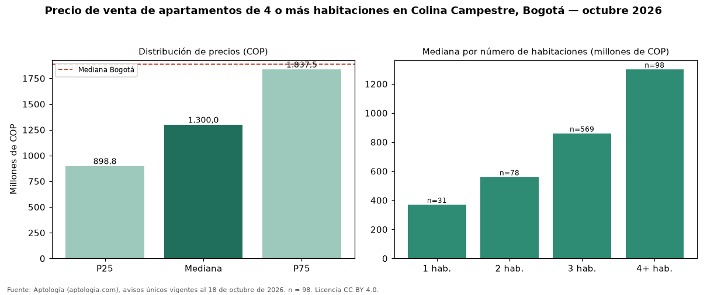

Precio de venta de apartamentos de 4 o más habitaciones en Colina Campestre, Bogotá — octubre 2026
COP 1,30 mil millones es el precio mediano de apartamentos de 4 o más habitaciones en venta en Colina Campestre (localidad de Suba), Bogotá (n = 98 avisos únicos). Comparado con la mediana de la ciudad, COP 1,89 mil millones, la diferencia es de 31 % por debajo. El área mediana anunciada es 184 m² (en Bogotá: 257 m²). En el mismo barrio, la mediana de apartamentos es COP 370 millones con 1 habitación, COP 560 millones con 2 habitaciones, COP 860 millones con 3 habitaciones. Por metro cuadrado, la mediana es COP 6.833.004/m² (−7 % frente a COP 7.311.919/m² en Bogotá). El rango intercuartílico va de COP 899 millones a COP 1,84 mil millones (razón 2,0), una dispersión alta. 99 % de los avisos incluye al menos un parqueadero. Datos abiertos CC BY 4.0 de Aptología; fuente y búsqueda de inmuebles: https://www.aptologia.com/venta/bogota/colina-campestre. Archivos: PDF de 2 páginas, CSV con las cifras y gráfica PNG.

| Avisos únicos | 98 |
|---|---|
| Percentil 25 | COP 898.750.000 |
| Mediana | COP 1.300.000.000 |
| Percentil 75 | COP 1.837.500.000 |
| Mediana por m² | COP 6.833.003 |
Fuente: avisos vigentes de portales inmobiliarios recopilados por Aptología, deduplicados (mínimo 30 avisos únicos por celda). Precios pedidos, no cerrados. Fecha: 2026-10-18.